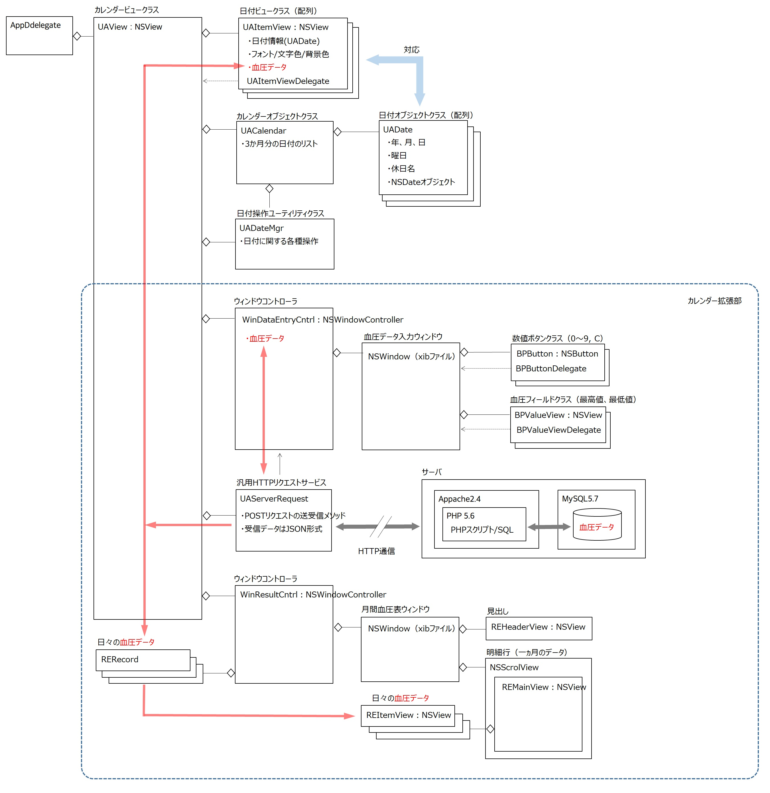
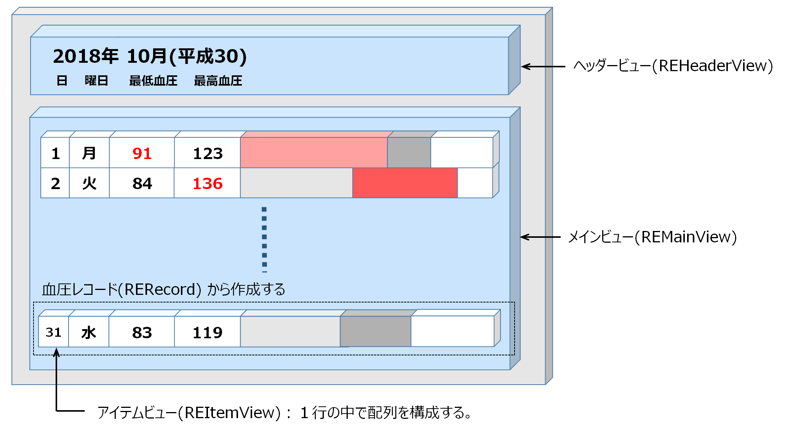

カレンダーに血圧を入力して健康管理に役立ててみる
サンプル動画
シンプルカレンダーの機能を拡張しデータの入力機能を追加し、日々の血圧を入力する。入力したデータを元に月間の血圧一覧表を作成し表示する。血圧値はグラフ化する。
血圧の入力方法
日付を選択し（青い枠線で囲まれる）、入力ボタンを押す。または、日付をマウスでダブルクリックすれば、その日の血圧データ入力シートが開く。
キーボード入力、またはシートの数字ボタンをクリックして血圧を入力し、確定フラグをオンにし、登録ボタンを実行する。入力が完了した日はカレンダーの日付が丸印で囲まれる。入力したデータはデータベースに登録される。確定フラグをオフで登録した場合は、値はデータベースに登録されるが、入力未完了の扱いとする。
月間血圧一覧表の表示
一覧表示ボタンをクリックすると、その月の血圧の一覧表が表示される。血圧は棒グラフ化し、血圧状態が一目で把握できる。高血圧（血圧値が標準的な基準値を超えている）場合、値とグラフの色を変えることによって警告する。
処理方式
クライアント/サーバ方式とする。アプリケーションからサーバにHTTPリクエストを送り、サーバはJSON形式のレスポンスデータを返す。データベースはMySQLで実装し、PHPスクリプトでデータの参照・更新を行う。
サーバ環境
・Webサーバー Apache2.4 & PHP5.6
・データベース MySQL5.7
クラス構造図
クラス一覧
アプリケーションで使用する定数定義
[拡張機能] WebサーバにHTTPリクエストメッセージを送信し、データベースから1ヶ月分の血圧データを取得、カレンダーに保持する。血圧入シート、月間血圧一覧表を開く。
[拡張機能] プロパティに日付ごとの血圧データを保持する。
[シンプルカレンダーと同じ]
[シンプルカレンダーと同じ]
[シンプルカレンダーと同じ]
[シンプルカレンダーと同じ]
WinDataEntryCntr：NSWindowControllerのサブクラス
WebサーバにHTTPリクエストメッセージを送信し、データベースから当日の血圧データを取得し、シートに表示する。
入力された血圧値のチェックを行う。
データは、HTTPリクエストメッセージとしてをWebサーバに送信し、データベースに登録する。
BPButton：NSButtonのサブクラス
数字ボタン。クリックしたときボタンの背景色を変える。
UAAcceptButton：NSButtonのサブクラス
確定チェックボックス。Enterキーを押したときチェックを反転する。
BPValueView：NSViewのサブクラス
血圧値を入力するフィールド。入力された値を表示する。自身がファーストレスポンダーになったとき背景色を変える。
WinResultCntrl：NSWindowControllerのサブクラス

1ヵ月分の血圧データーから月間血圧一覧表を作成する。
表に文字列やグラフを表示するには、メインビューの上に要素ビューを貼り付けるという方法をとる。日付、曜日、血圧値の文字列はアイテムビューに drawAtPointメソッドで描画する。棒グラフは、要素ビューの横幅を血圧の最低値、最高値に応じた長さにすることで表現する。警告のために文字やグラフの色を赤色にする。
月間血圧一覧表の構成要素
REHeaderView：NSViewのサブクラス
表の見出しを表示する。
REMainView：NSViewのサブクラス
表のベースとなるクラス。要素ビューが貼り付けられる。
REItemView：NSViewのサブクラス
表の表示単位となる要素ビュー
血圧レコードを定義する（構造体と同等）
FlippedView：NSViewのサブクラス
ビューのY軸を反転する。コンテントビューのクラスとする。